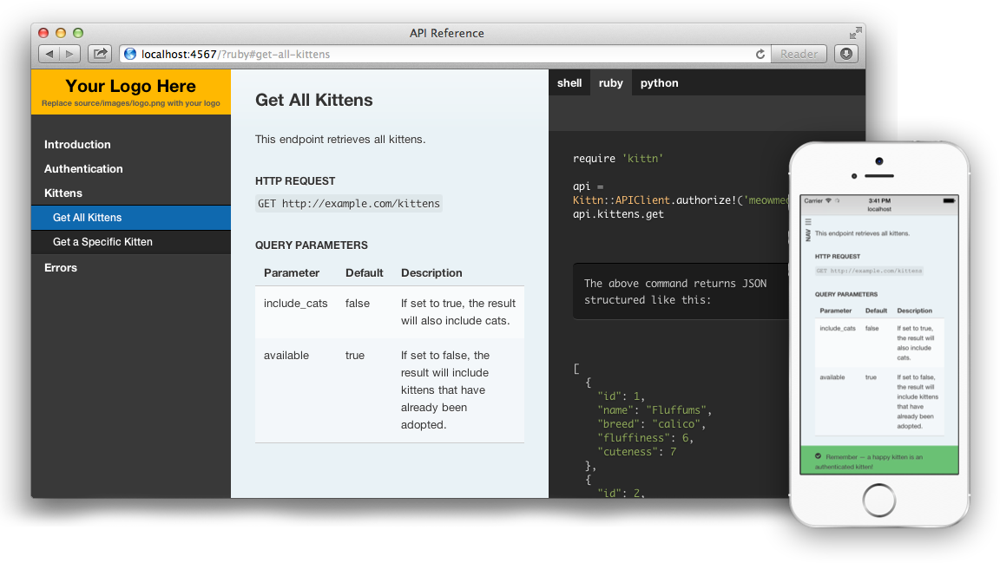

Slate: Static API Documentation Generator
I came across slate tool when I was looking for API documentation generator for our webservice API. 
I am the big fan of Markdown and I was looking for a tool like this for writing a documentation.
Getting Started with Slate
Slate requires Ruby 1.9.3 and newer.
It’s really easy to get started:
- Install Ruby 1.9.3 or newer
Install Bundler (you may need root permissions)
gem install bundlerFork a
https://github.com/tripit/slate.gitrepository in GitHubClone your forked repository locally:
git clone https://github.com/YOURUSERNAME/slate.git cd slateInstall bundle dependencies
bundle install
If installing dependencies fails you may download stable version of slate, extract from archive and try to install dependencies again. 7. Start the test server
bundle exec middleman server
- Navigate to http://localhost:5739 to see your documentation
- Run
rake buildto generate documentation locally orrake publishfor deploying to remote server (you may need an extra setup).
See the slate wiki for more details.
Predefined (sample) API documentation is defined in the sources/index.md document.
You may want to create a new one in source/v1/index.md. It will be transferred to http://localhost:5739/v1/
Generating PDF version
Along with HTML documentation, having a PDF version is also desirable. There is no PDF documentation generator in Slate out of the box. But it is very easy to integrate a ruby PDF generator
Add and activate pdfmaker ruby gem in config.rb:
## Pdfmaker custom extension. Add if you want PDF generati
require 'makepdf'
activate :pdfmaker
Then create file makepdf.rb in the base folder:
module PdfMaker
class << self
def registered(app)
app.after_build do |builder|
begin
require 'pdfkit'
kit = PDFKit.new(File.new('build/pdf.html'),
:page_size => 'A4',
:margin_top => 10,
:margin_bottom => 10,
:margin_left => 10,
:margin_right => 10,
:disable_smart_shrinking => false,
:print_media_type => true,
:dpi => 96
)
file = kit.to_file('build/api.pdf')
rescue Exception =>e
builder.say_status "PDF Maker", "Error: #{e.message}", Thor::Shell::Color::RED
raise
end
builder.say_status "PDF Maker", "PDF file available at build/api.pdf"
end
end
alias :included :registered
end
end
::Middleman::Extensions.register(:pdfmaker, PdfMaker)
As you can see, PDFKit and subsequently wkhtmltopdf is used under the hood.
Clone source/layouts/layout.erb and modify it to be pdf-friendly:
<!doctype html>
<html>
<head>
<meta charset="utf-8">
<meta content="IE=edge,chrome=1" http-equiv="X-UA-Compatible">
<meta name="viewport" content="width=device-width, initial-scale=1, maximum-scale=1">
<meta name="date" content="<%= Time.now.strftime("%Y-%m-%dT%H:%M:%S%Z") %>">
<title><%= current_page.data.title %> v.<%= current_page.data.version %></title>
<meta name="pdfkit-footer_right" content="Page [page] of [topage]">
<meta name="pdfkit-footer_left" content="[title] | <%= Time.new.strftime("%Y-%m-%d") %>">
<meta name="pdfkit-footer_line" content="">
<meta name="pdfkit-footer_font_size" content="8">
<%= stylesheet_link_tag :print, media: :all %>
</head>
<body class="<%= page_classes %>">
<section class="titlePage">
<% if current_page.data.home_url %>
<a href="<%= current_page.data.home_url %>"><%= image_tag "logo.png" %></a>
<% else %>
<%= image_tag "logo.png" %>
<% end %>
<h1><%= current_page.data.title %></h1>
<footer>
<div>Version <%= current_page.data.version %></div>
<div>Date: <%= Time.new.strftime("%Y-%m-%d") %></div>
</footer>
</section>
<section class="content">
<%= yield %>
<% current_page.data.includes && current_page.data.includes.each do |include| %>
<%= partial "includes/#{include}" %>
<% end %>
</section>
</body>
</html>
Notice pdfkit-footer_* meta tags here.
Create a separate index file with print layout source/pdf.md:
---
layout: "pdf"
title: API Reference
version: "2.32"
---
Blah-blah-blah...
Rumors volare in berolinum!
Squid combines greatly with salted ghee.
Loren ipsum...
Important thing is to specify layout «pdf»
Now you may run generation:
bundle exec middleman build --clean
I hope this little instruction will help you to generate a PDF version of your API.
Other API docs generators.
Other static API documentation generators:
Aglio. It renders API documentation in API Bluepring format to Beautiful sites.
Swagger UI. It allows to generate REST API documentation from Java sources. See the article, API documentation example.
http://jsondoc.org/ - Java java library useful to build the documentation of your RESTful services. Can be used to generate a static site.